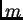

James Clerk Maxwell
[From the Transactions of the Royal Society of Edinburgh,
Vol. XXI. Part IV.]
(Read 20th April, 1857.)
To those who study the progress of exact science, the common spinning-top is a symbol of the labours and the perplexities of men who had successfully threaded the mazes of the planetary motions. The mathematicians of the last age, searching through nature for problems worthy of their analysis, found in this toy of their youth, ample occupation for their highest mathematical powers.
No illustration of astronomical precession can be devised more perfect than that presented by a properly balanced top, but yet the motion of rotation has intricacies far exceeding those of the theory of precession.
Accordingly, we find Euler and D'Alembert devoting their talent and their patience to the establishment of the laws of the rotation of solid bodies. Lagrange has incorporated his own analysis of the problem with his general treatment of mechanics, and since his time M. Poinsôt has brought the subject under the power of a more searching analysis than that of the calculus, in which ideas take the place of symbols, and intelligible propositions supersede equations.
In the practical department of the subject, we must notice the rotatory machine of Bohnenberger, and the nautical top of Troughton. In the first of these instruments we have the model of the Gyroscope, by which Foucault has been able to render visible the effects of the earth's rotation. The beautiful experiments by which Mr J. Elliot has made the ideas of precession so familiar to us are performed with a top, similar in some respects to Troughton's, though not borrowed from his.
The top which I have the honour to spin before the Society, differs from that of Mr Elliot in having more adjustments, and in being designed to exhibit far more complicated phenomena.
The arrangement of these adjustments, so as to produce the desired effects, depends on the mathematical theory of rotation. The method of exhibiting the motion of the axis of rotation, by means of a coloured disc, is essential to the success of these adjustments. This optical contrivance for rendering visible the nature of the rapid motion of the top, and the practical methods of applying the theory of rotation to such an instrument as the one before us, are the grounds on which I bring my instrument and experiments before the Society as my own.
I propose, therefore, in the first place, to give a brief outline of such parts of the theory of rotation as are necessary for the explanation of the phenomena of the top.
I shall then describe the instrument with its adjustments, and the effect of each, the mode of observing of the coloured disc when the top is in motion, and the use of the top in illustrating the mathematical theory, with the method of making the different experiments.
Lastly, I shall attempt to explain the nature of a possible variation in the earth's axis due to its figure. This variation, if it exists, must cause a periodic inequality in the latitude of every place on the earth's surface, going through its period in about eleven months. The amount of variation must be very small, but its character gives it importance, and the necessary observations are already made, and only require reduction.
The theory of the rotation of a rigid system is strictly deduced from the elementary laws of motion, but the complexity of the motion of the particles of a body freely rotating renders the subject so intricate, that it has never been thoroughly understood by any but the most expert mathematicians. Many who have mastered the lunar theory have co ne to erroneous conclusions on this subject; and even Newton has chosen to deduce the disturbance of the earth's axis from his theory of the motion of the nodes of a free orbit, rather than attack the problem of the rotation of a solid body.
The method by which M. Poinsôt has rendered the theory more manageable, is by the liberal introduction of ``appropriate ideas,'' chiefly of a geometrical character, most of which had been rendered familiar to mathematicians by the writings of Monge, but which then first became illustrations of this branch of dynamics. If any further progress is to be made in simplifying and arranging the theory, it must be by the method which Poinsôt has repeatedly pointed out as the only one which can lead to a true knowledge of the subject,--that of proceeding from one distinct idea to another instead of trusting to symbols and equations.
An important contribution to our stock of appropriate ideas and methods has lately been made by Mr R. B. Hayward, in a paper, ``On a Direct Method of estimating Velocities, Accelerations, and all similar quantities, with respect to axes, moveable in any manner in Space.'' (Trans. Cambridge Phil. Soc Vol. x. Part I.)
 In this communication I intend to
confine myself to that part of the subject which the top is intended
io illustrate, namely, the alteration of the position of the axis in a
body rotating freely about its centre of gravity. I shall, therefore,
deduce the theory as briefly as possible, from two considerations
only,--the permanence of the original angular momentum in
direction and magnitude, and the permanence of the original vis
viva.
In this communication I intend to
confine myself to that part of the subject which the top is intended
io illustrate, namely, the alteration of the position of the axis in a
body rotating freely about its centre of gravity. I shall, therefore,
deduce the theory as briefly as possible, from two considerations
only,--the permanence of the original angular momentum in
direction and magnitude, and the permanence of the original vis
viva.
 The mathematical difficulties of the theory of
rotation arise chiefly from the want of geometrical illustrations and
sensible images, by which we might fix the results of analysis in our
minds.
The mathematical difficulties of the theory of
rotation arise chiefly from the want of geometrical illustrations and
sensible images, by which we might fix the results of analysis in our
minds.
It is easy to understand the motion of a body revolving about a fixed axle. Every point in the body describes a circle about the axis, and returns to its original position after each complete revolution. But if the axle itself be in motion, the paths of the different points of the body will no longer be circular or re-entrant. Even the velocity of rotation about the axis requires a careful definition, and the proposition that, in all motion about a fixed point, there is always one line of particles forming an instantaneous axis, is usually given in the form of a very repulsive mass of calculation. Most of these difficulties may be got rid of by devoting a little attention to the mechanics and geometry of the problem before entering on the discussion of the equations.
Mr Hayward, in his paper already referred to, has made great use of the mechanical conception of Angular Momentum.
The angular momentum of any system about an axis is the algebraical sum of the angular momenta of its parts.
As the rate of change of the linear momentum of a particle measures the moving force which acts on it, so the rate of change of angular momentum measures the moment of that force about an axis.
All actions between the parts of a system, being pairs of equal and opposite forces, produce equal and opposite changes in the angular momentum of those parts. Hence the whole angular momentum of the system is not affected by these actions and re-actions.
 When a system of invariable form revolves about an
axis, the angular velocity of every part is the same, and the angular
momentum about the axis is the product of the angular velocity
and the moment of inertia about that axis.
When a system of invariable form revolves about an
axis, the angular velocity of every part is the same, and the angular
momentum about the axis is the product of the angular velocity
and the moment of inertia about that axis.
 It is only in particular cases, however, that the
whole angular momentum can be estimated in this way. In
general, the axis of angular momentum differs from the axis of
rotation, so that there will be a residual angular momentum about an
axis perpendicular to that of rotation, unless that axis has one of
three positions, called the principal axes of the body.
It is only in particular cases, however, that the
whole angular momentum can be estimated in this way. In
general, the axis of angular momentum differs from the axis of
rotation, so that there will be a residual angular momentum about an
axis perpendicular to that of rotation, unless that axis has one of
three positions, called the principal axes of the body.
By referring everything to these three axes, the theory is greatly simplified. The moment of inertia about one of these axes is greater than that about any other axis through the same point, and that about one of the others is a minimum. These two are at right angles, and the third axis is perpendicular to their plane, and is called the mean axis.
 Let ,
Let ,  , be the moments of inertia about the
principal axes through the centre of gravity, taken in order of
magnitude, and let be the angular
velocities about them, then the angular momenta will be ,
, and .
, be the moments of inertia about the
principal axes through the centre of gravity, taken in order of
magnitude, and let be the angular
velocities about them, then the angular momenta will be ,
, and .
Angular momenta may be compounded like forces or velocities, by the
law of the ``parallelogram,'' and since these three are at right angles
to each other, their resultant is
| (1) |
We shall call this axis of angular momentum the invariable axis. It is perpendicular to what has been called the invariable plane. Poinsôt calls it the axis of the couple of impulsion. The direction-cosines of this axis in the body are,
Since ,  and vary during the motion, we need some additional condition to determine the relation between them. We find this in the property of the vis viva of a system of invariable form in which there is no friction. The vis viva of such a system must be constant. We express this in the equation
| (2) |
Substituting the values of , , in terms of , , ,
Let  , , , , and this
equation becomes
, , , , and this
equation becomes
| (3) |
| (4) |
The intersections of this cone with planes perpendicular to the
principal axes are found by putting  , , or , constant in this
equation. By giving various values, all the different paths of
the pole of the invariable axis, corresponding to different initial
circumstances, may be traced.
, , or , constant in this
equation. By giving various values, all the different paths of
the pole of the invariable axis, corresponding to different initial
circumstances, may be traced.
 In the figures, I have supposed , , and . The first figure represents a section of the
various cones by a plane perpendicular to the axis of
In the figures, I have supposed , , and . The first figure represents a section of the
various cones by a plane perpendicular to the axis of  , which is
that of greatest moment of inertia. These sections are ellipses
having their major axis parallel to the axis of . The value of
corresponding to each of these curves is indicated by figures
beside the curve. The ellipticity increases with the size of the
ellipse, so that the section corresponding to would be two
parallel straight lines (beyond the bounds of the figure), after which
the sections would be hyperbolas.
, which is
that of greatest moment of inertia. These sections are ellipses
having their major axis parallel to the axis of . The value of
corresponding to each of these curves is indicated by figures
beside the curve. The ellipticity increases with the size of the
ellipse, so that the section corresponding to would be two
parallel straight lines (beyond the bounds of the figure), after which
the sections would be hyperbolas.
 The second figure represents the sections made by a
plane, perpendicular to the mean axis. They are all
hyperbolas, except when , when the section is two
intersecting straight lines.
The second figure represents the sections made by a
plane, perpendicular to the mean axis. They are all
hyperbolas, except when , when the section is two
intersecting straight lines.
The third figure shows the sections perpendicular to the axis of least moment of inertia. From to the sections are ellipses, gives two parallel straight lines, and beyond these the curves are hyperbolas.
 The fourth and fifth figures show the sections of the
series of cones made by a cube and a sphere respectively. The use of
these figures is to exhibit the connexion between the different curves
described about the three principal axes by the invariable axis during
the motion of the body.
The fourth and fifth figures show the sections of the
series of cones made by a cube and a sphere respectively. The use of
these figures is to exhibit the connexion between the different curves
described about the three principal axes by the invariable axis during
the motion of the body.
 We have next to compare the velocity of the invariable
axis with respect to the body, with that of the body itself round one
of the principal axes. Since the invariable axis is fixed in space,
its motion relative to the body must be equal and opposite to that of
the portion of the body through which it passes. Now the angular
velocity of a portion of the body whose direction-cosines are ,
, , about the axis of
We have next to compare the velocity of the invariable
axis with respect to the body, with that of the body itself round one
of the principal axes. Since the invariable axis is fixed in space,
its motion relative to the body must be equal and opposite to that of
the portion of the body through which it passes. Now the angular
velocity of a portion of the body whose direction-cosines are ,
, , about the axis of  is
is
Substituting the values of , , , in terms of , , , and taking account of equation (3), this expression becomes
Changing the sign and putting
 we have the angular velocity of the invariable
axis about that of
we have the angular velocity of the invariable
axis about that of 
 If we attend to the curve described by the pole of the
invariable axis on the sphere in fig. 5, we shall see that the areas
described by that point, if projected on the plane of , are swept
out at the rate
If we attend to the curve described by the pole of the
invariable axis on the sphere in fig. 5, we shall see that the areas
described by that point, if projected on the plane of , are swept
out at the rate
Now the semi-axes of the projection of the spherical ellipse described by the pole are
Dividing the area of this ellipse by the area described during one revolution of the body, we find the number of revolutions of the body during the description of the ellipse--
The projections of the spherical ellipses upon the plane of are
all similar ellipses, and described in the same number of revolutions;
and in each ellipse so projected, the area described in any time is
proportional to the number of revolutions of the body about the axis
of  , so that if we measure time by revolutions of the body, the
motion of the projection of the pole of the invariable axis is
identical with that of a body acted on by an attractive central force
varying directly as the distance. In the case of the hyperbolas in
the plane of the greatest and least axis, this force must be supposed
repulsive. The dots in the figures 1, 2, 3, are intended to indicate
roughly the progress made by the invariable axis during each
revolution of the body about the axis of
, so that if we measure time by revolutions of the body, the
motion of the projection of the pole of the invariable axis is
identical with that of a body acted on by an attractive central force
varying directly as the distance. In the case of the hyperbolas in
the plane of the greatest and least axis, this force must be supposed
repulsive. The dots in the figures 1, 2, 3, are intended to indicate
roughly the progress made by the invariable axis during each
revolution of the body about the axis of  , and
respectively. It must be remembered that the rotation about these
axes varies with their inclination to the invariable axis, so that the
angular velocity diminishes as the inclination increases, and
therefore the areas in the ellipses above mentioned are not described
with uniform velocity in absolute time, but are less rapidly swept out
at the extremities of the major axis than at those of the minor.
, and
respectively. It must be remembered that the rotation about these
axes varies with their inclination to the invariable axis, so that the
angular velocity diminishes as the inclination increases, and
therefore the areas in the ellipses above mentioned are not described
with uniform velocity in absolute time, but are less rapidly swept out
at the extremities of the major axis than at those of the minor.
 When two of the axes have equal moments of inertia, or
, then the angular velocity is constant, and the
path of the invariable axis is circular, the number of revolutions of
the body during one circuit of the invariable axis, being
When two of the axes have equal moments of inertia, or
, then the angular velocity is constant, and the
path of the invariable axis is circular, the number of revolutions of
the body during one circuit of the invariable axis, being
The motion is in the same direction as that of the rotation, or in the
opposite direction, according as the axis of  is that of greatest
or of least moment of inertia.
is that of greatest
or of least moment of inertia.
 Both in this case, and in that in which the three axes
are unequal, the motion of the invariable axis in the body may be
rendered very slow by diminishing the difference of the moments of
inertia. The angular velocity of the axis of
Both in this case, and in that in which the three axes
are unequal, the motion of the invariable axis in the body may be
rendered very slow by diminishing the difference of the moments of
inertia. The angular velocity of the axis of  about the invariable
axis in space is
about the invariable
axis in space is
 The instantaneous axis is not so easily
observed. It revolves round the invariable axis in the same time with
the axis of
The instantaneous axis is not so easily
observed. It revolves round the invariable axis in the same time with
the axis of  , at a distance which is very small in the case when
, , , are nearly equal. From its rapid angular motion in
space, and its near coincidence with the invariable axis, there is no
advantage in studying its motion in the top.
, at a distance which is very small in the case when
, , , are nearly equal. From its rapid angular motion in
space, and its near coincidence with the invariable axis, there is no
advantage in studying its motion in the top.
 By making the moments of inertia very unequal, and in
definite proportion to each other, and by drawing a few strong lines
as diameters of the disc, the combination of motions will produce an
appearance of epicycloids, which are the result of the continued
intersection of the successive positions of these lines, and the cusps
of the epicycloids lie in the curve in which the instantaneous axis
travels. Some of the figures produced in this way are very pleasing.
By making the moments of inertia very unequal, and in
definite proportion to each other, and by drawing a few strong lines
as diameters of the disc, the combination of motions will produce an
appearance of epicycloids, which are the result of the continued
intersection of the successive positions of these lines, and the cusps
of the epicycloids lie in the curve in which the instantaneous axis
travels. Some of the figures produced in this way are very pleasing.
In order to illustrate the theory of rotation experimentally, we must have a body balanced on its centre of gravity, and capable of having its principal axes and moments of inertia altered in form and position within certain limits. We must be able to make the axle of the instrument the greatest, least, or mean principal axis, or to make it not a principal axis at all, and we must be able to see the position of the invariable axis of rotation at any time. There must be three adjustments to regulate the position of the centre of gravity, three for the magnitudes of the moments of inertia, and three for the directions of the principal axes, nine independent adjustments, which may be distributed as we please among the screws of the instrument.
The form of the body of the instrument which I have found most
suitable is that of a bell (fig. 6). is a hollow cone of brass,
is a heavy ring cast in the same piece. Six screws, with heavy
heads,  , , , ,
, , , ,  , , work horizontally in the ring,
and three similar screws, , , , work vertically through the
ring at equal intervals. is the axle of the instrument, is
a brass screw working in the upper part of the cone , and capable
of being firmly clamped by means of the nut .
, , work horizontally in the ring,
and three similar screws, , , , work vertically through the
ring at equal intervals. is the axle of the instrument, is
a brass screw working in the upper part of the cone , and capable
of being firmly clamped by means of the nut .  is a cylindrical
brass bob, which may be screwed up or down the axis, and fixed in its
place by the nut .
is a cylindrical
brass bob, which may be screwed up or down the axis, and fixed in its
place by the nut .
The lower extremity of the axle is a fine steel point, finished without emery, and afterwards hardened. It runs in a little agate cup set in the top of the pillar . If any emery had been embedded in the steel, the cup would soon be worn out. The upper end of the axle has also a steel point by which it may be kept steady while spinning.
When the instrument is in use, a coloured disc is attached to the upper end of the axle.
It will be seen that there are eleven adjustments, nine screws in the brass ring, the axle screwing in the cone, and the bob screwing on the axle. The advantage of the last two adjustments is, that by them large alterations can be made, which are not possible by means of the small screws.
The first thing to be done with the instrument is, to make the steel point at the end of the axle coincide with the centre of gravity of the whole. This is done roughly by screwing the axle to the right place nearly, and then balancing the instrument on its point, and screwing the bob and the horizontal screws till the instrument will remain balanced in any position in which it is placed.
When this adjustment is carefully made, the rotation of the top has no tendency to shake the steel point in the agate cup, however irregular the motion may appear to be.
The next thing to be done, is to make one of the principal axes of the central ellipsoid coincide with the axle of the top.
To effect this, we must begin by spinning the top gently about its axle, steadying the upper part with the finger at first. If the axle is already a principal axis the top will continue to revolve about its axle when the finger is removed. If it is not, we observe that the top begins to spin about some other axis, and the axle moves away from the centre of motion and then back to it again, and so on, alternately widening its circles and contracting them.
It is impossible to observe this motion successfully, without the aid of the coloured disc placed near the upper end of the axis. This disc is divided into sectors, and strongly coloured, so that each sector may be recognised by its colour when in rapid motion. If the axis about which the top is really revolving, falls within this disc, its position may be ascertained by the colour of the spot at the centre of motion. If the central spot appears red, we know that the invariable axis at that instant passes through the red part of the disc.
In this way we can trace the motion of the invariable axis in the revolving body, and we find that the path which it describes upon the disc may be a circle, an ellipse, an hyperbola, or a straight line, according to the arrangement of the instrument.
In the case in which the invariable axis coincides at first with the axle of the top, and returns to it after separating from it for a time, its true path is a circle or an ellipse having the axle in its circumference. The true principal axis is at the centre of the closed curve. It must be made to coincide with the axle by adjusting the vertical screws , , .
Suppose that the colour of the centre of motion, when farthest from the axle, indicated that the axis of rotation passed through the sector , then the principal axis must also lie in that sector at half the distance from the axle.
If this principal axis be that of greatest moment of inertia, we must raise the screw in order to bring it nearer the axle . If it be the axis of least moment we must lower the screw . In this way we may make the principal axis coincide with the axle. Let us suppose that the principal axis is that of greatest moment of inertia, and that we have made it coincide with the axle of the instrument. Let us also suppose that the moments of inertia about the other axes are equal, and very little less than that about the axle. Let the top be spun about the axle and then receive a disturbance which causes it to spin about some other axis. The instantaneous axis will not remain at rest either in space or in the body. In space it will describe a right cone, completing a revolution in somewhat less than the time of revolution of the top. In the body it will describe another cone of larger angle in a period which is longer as the difference of axes of the body is smaller. The invariable axis will be fixed in space, and describe a cone in the body.
The relation of the different motions may be understood from the
following illustration. Take a hoop and make it revolve about a stick
which remains at rest and touches the inside of the hoop. The section
of the stick represents the path of the instantaneous axis in space,
the hoop that of the same axis in the body, and the axis of the stick
the invariable axis. The point of contact represents the pole of the
instantaneous axis itself, travelling many times round the stick
before it gets once round the hoop. It is easy to see that the
direction in which the hoop moves round the stick, so that if the top
be spinning in the direction , ,  , the colours will appear in
the same order.
, the colours will appear in
the same order.
By screwing the bob B up the axle, the difference of the axes of inertia may be diminished, and the time of a complete revolution of the invariable axis in the body increased. By observing the number of revolutions of the top in a complete cycle of colours of the invariable axis, we may determine the ratio of the moments of inertia.
By screwing the bob up farther, we may make the axle the principal axis of least moment of inertia.
The motion of the instantaneous axis will then be that of the point of
contact of the stick with the outside of the hoop rolling on
it. The order of colours will be  , , , if the top be
spinning in the direction , ,
, , , if the top be
spinning in the direction , ,  , and the more the bob is
screwed up, the more rapidly will the colours change, till it ceases
to be possible to make the observations correctly.
, and the more the bob is
screwed up, the more rapidly will the colours change, till it ceases
to be possible to make the observations correctly.
In calculating the dimensions of the parts of the instrument, it is necessary to provide for the exhibition of the instrument with its axle either the greatest or the least axis of inertia. The dimensions and weights of the parts of the top which I have found most suitable, are given in a note at the end of this paper.
Now let us make the axes of inertia in the plane of the ring unequal.
We may do this by screwing the balance screws  and farther
from the axle without altering the centre of gravity.
and farther
from the axle without altering the centre of gravity.
Let us suppose the bob  screwed up so as to make the axle the axis
of least inertia. Then the mean axis is parallel to , and the
greatest is at right angles to in the horizontal plane. The
path of the invariable axis on the disc is no longer a circle but an
ellipse, concentric with the disc, and having its major axis parallel
to the mean axis .
screwed up so as to make the axle the axis
of least inertia. Then the mean axis is parallel to , and the
greatest is at right angles to in the horizontal plane. The
path of the invariable axis on the disc is no longer a circle but an
ellipse, concentric with the disc, and having its major axis parallel
to the mean axis .
The smaller the difference between the moment of inertia about the axle and about the mean axis, the more eccentric the ellipse will be; and if, by screwing the bob down, the axle be made the mean axis, the path of the invariable axis will be no longer a closed curve, but an hyperbola, so that it will depart altogether from the neighbourhood of the axle. When the top is in this condition it must be spun gently, for it is very difficult to manage it when its motion gets more and more eccentric.
When the bob is screwed still farther down, the axle becomes the axis of greatest inertia, and the least. The major axis of the ellipse described by the invariable axis will now be perpendicular to , and the farther the bob is screwed down, the eccentricity of the ellipse will diminish, and the velocity with which it is described will increase.
I have now described all the phenomena presented by a body revolving freely on its centre of gravity. If we wish to trace the motion of the invariable axis by means of the coloured sectors, we must make its motion very slow compared with that of the top. It is necessary, therefore, to make the moments of inertia about the principal axes very nearly equal, and in this case a very small change in the position of any part of the top will greatly derange the position of the principal axis. So that when the top is well adjusted, a single turn of one of the screws of the ring is sufficient to make the axle no longer a principal axis, and to set the true axis at a considerable inclination to the axle of the top.
All the adjustments must therefore be most carefully arranged, or we may have the whole apparatus deranged by some eccentricity of spinning. The method of making the principal axis coincide with the axle must be studied and practised, or the first attempt at spinning rapidly may end in the destruction of the top, if not the table on which it is spun.
We must remember that these motions of a body about its centre of gravity, are not illustrations of the theory of the precession of the Equinoxes. Precession can be illustrated by the apparatus, but we must arrange it so that the force of gravity acts the part of the attraction of the sun and moon in producing a force tending to alter the axis of rotation. This is easily done by bringing the centre of gravity of the whole a little below the point on which it spins. The theory of such motions is far more easily comprehended than that which we have been investigating.
But the earth is a body whose principal axes are unequal, and from the phenomena of precession we can determine the ratio of the polar and equatorial axes of the ``central ellipsoid;'' and supposing the earth to have been set in motion about any axis except the principal axis, or to have had its original axis disturbed in any way, its subsequent motion would be that of the top when the bob is a little below the critical position.
The axis of angular momentum would have an invariable position in space, and would travel with respect to the earth round the axis of figure with a velocity where is the sidereal angular velocity of the earth. The apparent pole of the earth would travel (with respect to the earth) from west to east round the true pole, completing its circuit in sidereal days, which appears to be about 325.6 solar days.
The instantaneous axis would revolve about this axis in space in about a day, and would always be in a plane with the true axis of the earth and the axis of angular momentum. The effect of such a motion on the apparent position of a star would be, that its zenith distance should be increased and diminished during a period of 325.6 days. This alteration of zenith distance is the same above and below the pole, so that the polar distance of the star is unaltered. In fact the method of finding the pole of the heavens by observations of stars, gives the pole of the invariable axis, which is altered only by external forces, such as those of the sun and moon.
There is therefore no change in the apparent polar distance of stars due to this cause. It is the latitude which varies. The magnitude of this variation cannot be determined by theory. The periodic time of the variation may be found approximately from the known dynamical properties of the earth. The epoch of maximum latitude cannot be found except by observation, but it must be later in proportion to the east longitude of the observatory.
In order to determine the existence of such a variation of latitude, I have examined the observations of Polaris with the Greenwich Transit Circle in the years 1851-2-3-4. The observations of the upper transit during each month were collected, and the mean of each month found. The same was done for the lower transits. The difference of zenith distance of upper and lower transit is twice the polar distance of Polaris, and half the sum gives the co-latitude of Greenwich.
In this way I found the apparent co-latitude of Greenwich for each month of the four years specified.
There appeared a very slight indication of a maximum belonging to the set of months,
| March, 51. | Feb. 52. | Dec. 52. | Nov. 53. | Sept. 54. |
This result, however, is to be regarded as very doubtful, as there did not appear to be evidence for any variation exceeding half a second of space, and more observations would be required to establish the existence of so small a variation at all.
I therefore conclude that the earth has been for a long time revolving about an axis very near to the axis of figure, if not coinciding with it. The cause of this near coincidence is either the original softness of the earth, or the present fluidity of its interior. The axes of the earth are so nearly equal, that a considerable elevation of a tract of country might produce a deviation of the principal axis within the limits of observation, and the only cause which would restore the uniform motion, would be the action of a fluid which would gradually diminish the oscillations of latitude. The permanence of latitude essentially depends on the inequality of the earth's axes, for if they had been all equal, any alteration of the crust of the earth would have produced new principal axes, and the axis of rotation would travel about those axes, altering the latitudes of all places, and yet not in the least altering the position of the axis of rotation among the stars.
Perhaps by a more extensive search and analysis of the observations of different observatories, the nature of the periodic variation of latitude, if it exist, may be determined. I am not aware of any calculations having been made to prove its non-existence, although, on dynamical grounds, we have every reason to look for some very small variation having the periodic time of 325.6 days nearly, a period which is clearly distinguished from any other astronomical cycle, and therefore easily recognised.
| Part | Weight | |
| lb. | oz. | |
| I. Body of the top-- | ||
| Mean diameter of ring, 4 inches. | ||
| Section of ring, inch square. | ||
| The conical portion rises from the upper and inner edge of the ring, a height of inches from the base. | ||
| The whole body of the top weighs | 1 | 7 |
| Each of the nine adjusting screws has its screw 1 inch long, and the screw and head together weigh 1 ounce. The whole weigh | 9 | |
| II. Axle, &c.-- | ||
| Length of axle 5 inches, of which inch at the bottom is occupied by the steel point, inches are brass with a good screw turned on it, and the remaining inch is of steel, with a sharp point at the top. The whole weighs | ||
| The bob |
||
| The nuts and , for clamping the bob and the body of the top on the axle, each weigh oz. | 1 | |
| Weight of whole top | 2 | |
The best arrangement, for general observations, is to have the disc of card divided into four quadrants, coloured with vermilion, chrome yellow, emerald green, and ultramarine. These are bright colours, and, if the vermilion is good, they combine into a grayish tint when the rotation is about the axle, and burst into brilliant colours when the axis is disturbed. It is useful to have some concentric circles, drawn with ink, over the colours, and about 12 radii drawn in strong pencil lines. It is easy to distinguish the ink from the pencil lines, as they cross the invariable axis, by their want of lustre. In this way, the path of the invariable axis may be identified with great accuracy, and compared with theory.
7th May 1857. The paragraphs marked thus have been rewritten since the paper was read.